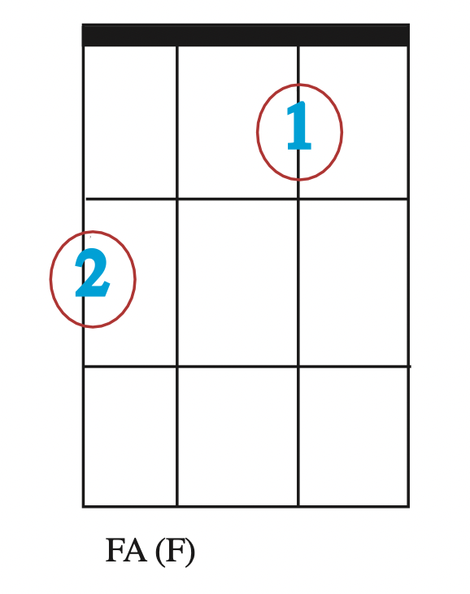
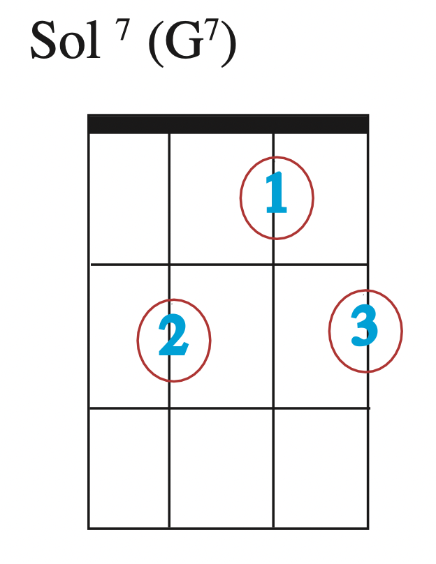
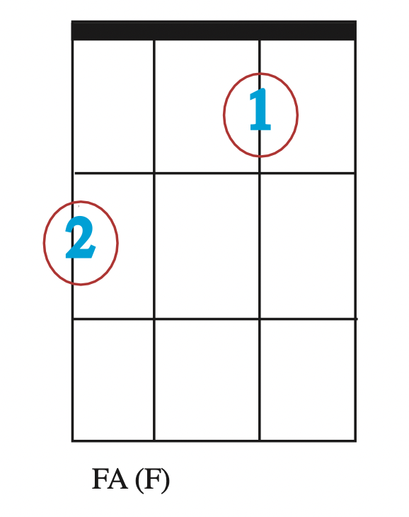
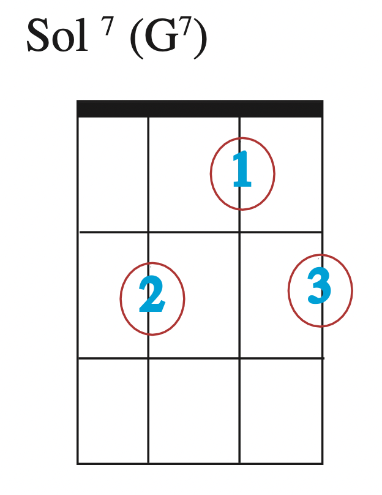

C'est quoi un accord ?
Un accord c'est un ensemble de trois notes qui forment un accord (merci captain Obvious !)
Par exemple : jouées ensemble les notes DO, MI et SOL forment l'accord de DO. Comment ça marche ? Un accord est constitué d'une fondamentale, d'une tierce (majeure ou mineure), et d'une quinte. Par exemple pour l'accord de DO :
- la fondamentale : le DO, elle porte le nom de l'accord,
- la tierce : le MI, la 3e note en partant de la fondamentale,
- la quinte : le SOL, la cinquième note après la fondamentale
Mais assez de théorie, si vous voulez en savoir plus, consultez ce site (ce qui est valable à la guitare l'est aussi à l'ukulélé)

 


